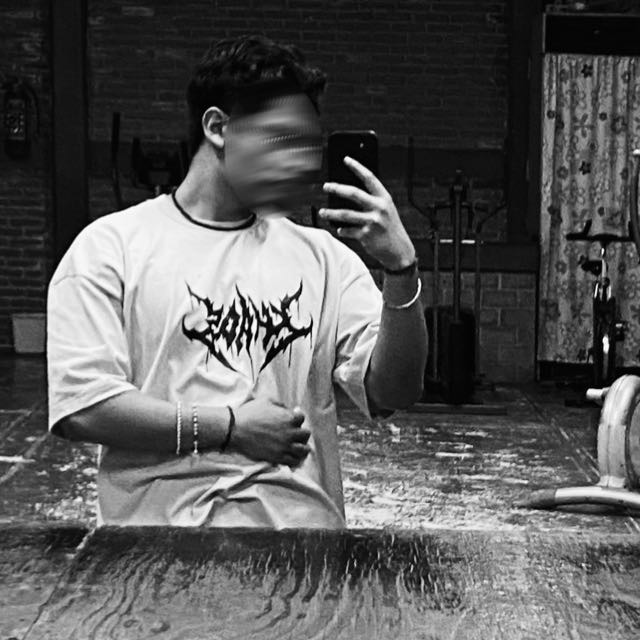

¿Quién soy?

Hola, mi nombre es Mauricio André Torres Rivera y soy estudiante de Ingeniería en Sistemas en la Universidad Univer Milenium.
Me considero una persona amable, amistosa y solidaria, siempre dispuesto a apoyar a los demás. Me gusta socializar y trabajar en equipo, ya que creo que la colaboración es clave para lograr buenos resultados.
Dentro de mi carrera, el área que más me apasiona es redes, ya que me interesa comprender cómo se conectan y comunican los sistemas.
En mi tiempo libre disfruto jugar videojuegos, los autos (especialmente los Vochos) y la mecánica automotriz. Además, cuento con conocimientos en electricidad automotriz.